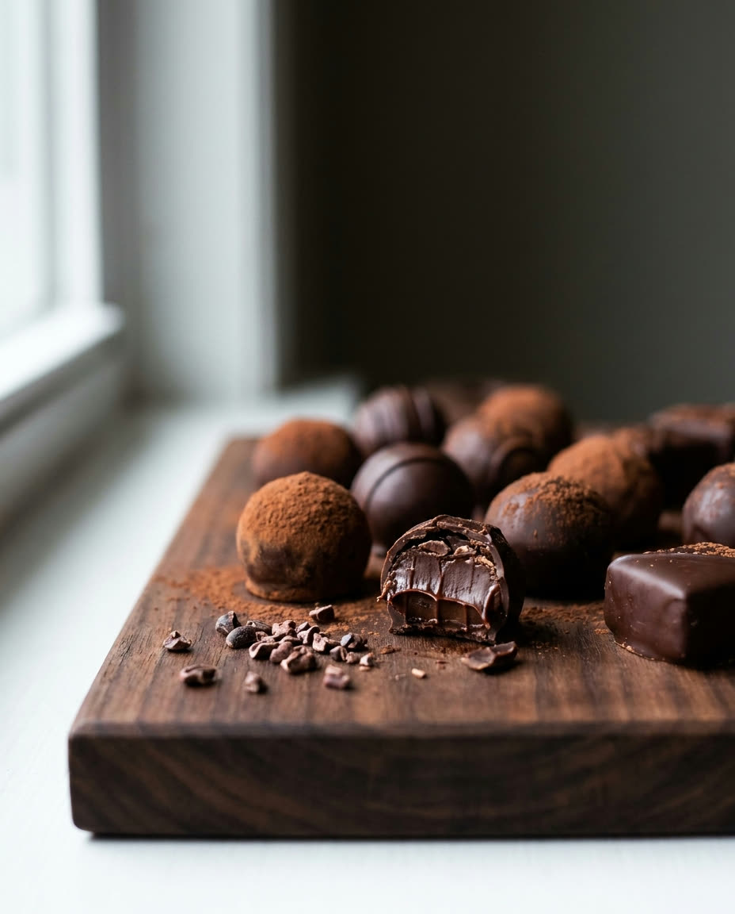
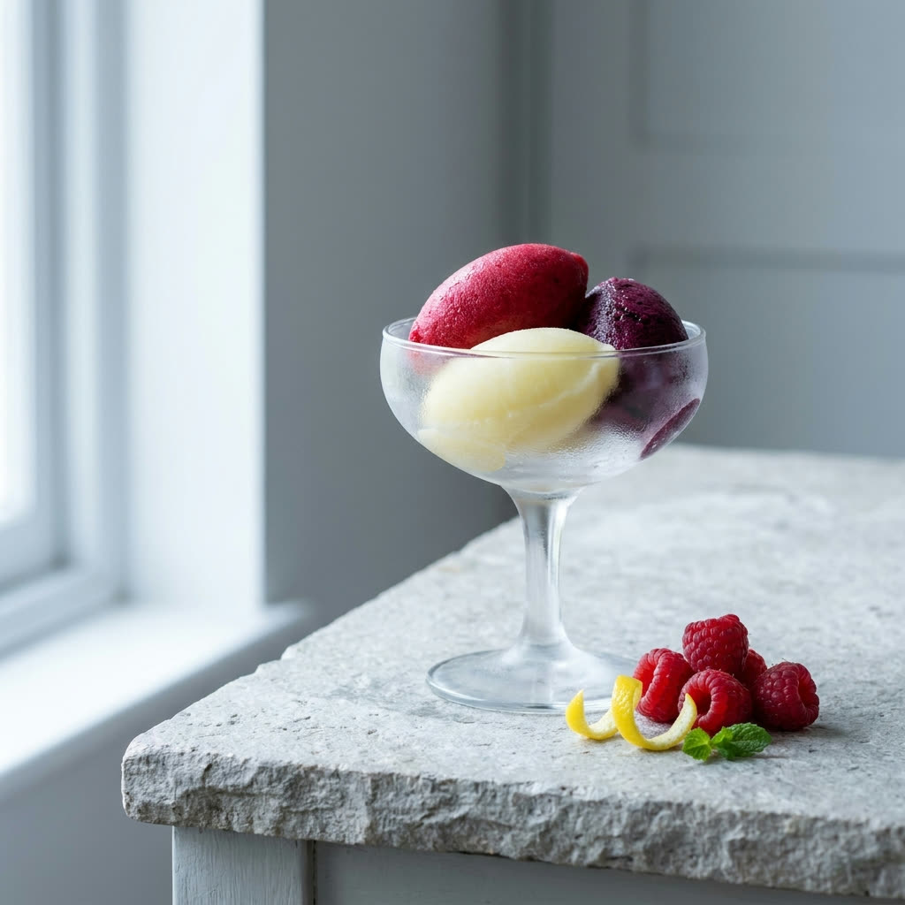
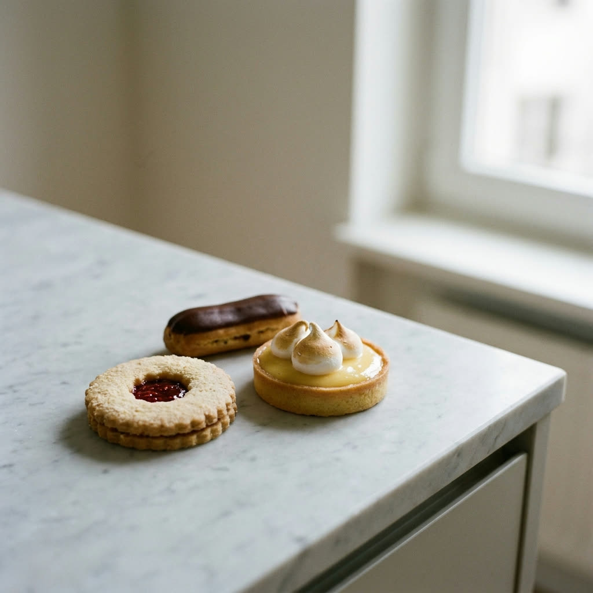
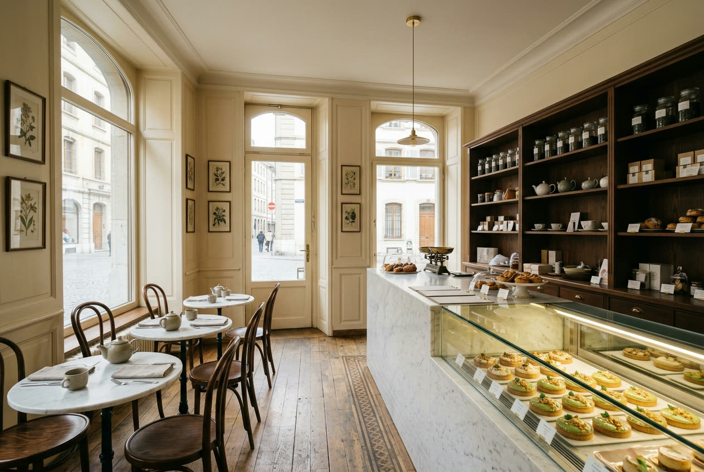

Confiserie Gremion, Genève
Le carac, fait maison chaque matin.
Sablé pur beurre, ganache de chocolat de plantation, fondant vert pomme. Vingt-six parfums, préparés sur place.
Trois couches,
rien de plus.
Le carac est un gâteau genevois. Celui-ci se monte sur place, tous les matins.
-
Le fondant
Un vert pomme lisse, coulé à la main, fermé d'un disque de chocolat noir.
-
La ganache
Chocolat de plantation d'Amérique latine et d'Afrique, travaillé le matin même.
-
Le sablé
Pur beurre, cuit court, croquant sous la ganache.
Il n'y a pas que le carac.
-
Les caracs
Vingt-six parfums, du classique au thé vert.
-

La chocolaterie
Pralinés et ganaches, moulés maison.
-
Tout se fait ici.
Dominique Gremion et son épouse sont au laboratoire chaque jour.
-

Les sorbets
Faits maison, dès les beaux jours.
-

La pâtisserie
Sablés, tartelettes, pièces de saison.
4,6 sur 5 sur Google
« Des caracs maison d'une qualité largement supérieure à ce qu'on trouve ailleurs. »
« Élue numéro un dans la confection de ce gâteau vert pomme fourré au chocolat. »

Nous trouver
-
Boulevard du Pont-d'Arve 6 1205 Genève
-
Lundi au vendredi, 07:30 à 18:15 Samedi et dimanche, fermé
-
+41 22 320 52 72 Tea-room sur place